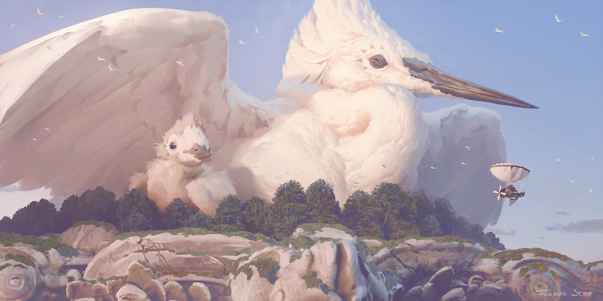

Suaffield, Jalenford O.
Creative Technologist & Storyteller
Contact Information
Email: JalenfordSuaffield@gmail.com
Location: Pasig City, Metro Manila, Philippines
Phone: +63 995 435 3790
Key Skills
Technical
Creative
Use of Industry-Standard Softwares
IT Infrastructure
Programming Basics
Concept Art
Digital and Traditional Animation
Voice Acting
Video Editing
Education
TVL Track ICT Strand Specialized in Animation
Doctor Cecilio Putong National Highschool
Bachelor of Science in Entertainment and Multimedia Computing
Manila Central University
Creative & Academic Projects
Look Back
Crafted a horrific short film narrative exploring common decency and respect towards elders.
YAKO-SEI Art Studio
Creative Branding and Collaboration.
Fudgy Munch
Created a business brand for a dessert store and website.
Animation Finale
Showcased a short animation film exploring Filipino Mythological Creatures.
Molecules
Voiceover for a Science and Technology presentation of Wildlife.

"Building bridges between tech and storytelling."